Entrega Final¶
Desarrollo de un modelo de reciclaje de plásticos provenientes de desechos de impresión 3D para fabricar placas funcionales: Proyecto “EcoPlaca 3D”.
Resumen¶
El proyecto “EcoPlaca 3D” aborda la problemática ambiental generada por los desechos plásticos provenientes de la impresión 3D, transformándolos en placas funcionales mediante el uso de tecnologías de fabricación digital y promoviendo la economía circular. En Uruguay, el crecimiento exponencial en el uso, la comercialización y la adopción de tecnologías de impresión 3D por parte de negocios locales, emprendedores y grandes empresas ha incrementado la generación de residuos plásticos, evidenciando la necesidad urgente de implementar soluciones sostenibles. Actualmente, no existen iniciativas en el país que ofrezcan una segunda vida a estos materiales, mucho menos orientadas a su conversión en placas funcionales.
Este trabajo presenta el diseño, desarrollo y fabricación de un sistema que permite reciclar los residuos plásticos generados por la impresión 3D, transformándolos en un material práctico, funcional y con valor estético. Se describen las metodologías aplicadas, los materiales y componentes utilizados, así como las preguntas clave abordadas a lo largo del proceso. El resultado es una solución innovadora, sostenible y accesible, dirigida a diseñadores, makers y emprendedores, con un modelo adaptado a las necesidades y herramientas locales, pero con potencial de replicabilidad a nivel global.
Introducción¶
El reciclaje de plásticos derivados de la impresión 3D representa un desafío significativo debido a la acumulación de residuos y la falta de un sistema eficaz para su reutilización. Este proyecto surge como respuesta a esta problemática, con el objetivo de crear un sistema replicable a nivel nacional que transforme los desechos plásticos generados por la impresión 3D en un material funcional, reutilizable en nuevos procesos productivos. Se busca, además, reducir el impacto ambiental de estos residuos y fomentar prácticas de economía circular en la comunidad de diseñadores y emprendedores, con un modelo que puede ser replicado en otros contextos del mundo.
Objetivos¶
Se destacan los siguientes puntos generales y específicos:
Objetivos Generales¶
Desarrollar un modelo local de reciclaje de desechos plásticos generados por la impresión 3D para transformarlos en placas funcionales reutilizables.
Objetivos Específicos¶
● Crear un proceso eficiente para clasificar, triturar, fundir y moldear desechos plásticos en un material laminar reutilizable.
● Desarrollar un sistema basado en Arduino para el monitoreo y estandarización de las condiciones de fabricación (temperatura y humedad) de las placas recicladas.
● Generar una guía y difundir la solución entre diseñadores, makers y emprendedores, promoviendo prácticas sostenibles y modelos de economía circular.
● Proponer alternativas de uso para el material laminar reciclado en diversos procesos de diseño y fabricación.
Marco teórico¶
El marco teórico se fundamenta en los principios de economía circular y sostenibilidad en la fabricación digital. En particular, se exploran los métodos de reciclaje de plásticos y su integración con tecnologías de fabricación aditiva (impresión 3D) y fabricación sustractiva (corte láser). El uso de sistemas de monitoreo digital, como Arduino, permite optimizar el proceso y garantizar la calidad del material reciclado. Además, se abordan iniciativas globales como Precious Plastics, un proyecto de código abierto que promueve el reciclaje descentralizado de plásticos a través de la fabricación digital.
Antecedentes¶
A lo largo del tiempo, la problemática de los desechos plásticos ha impulsado diversas iniciativas enfocadas en su reciclaje y reutilización, especialmente en combinación con tecnologías de fabricación digital. Estas iniciativas han servido de inspiración para el desarrollo de soluciones que promuevan la economía circular y reduzcan el impacto ambiental.
Antecedentes mundiales¶
En el ámbito global, el proyecto Precious Plastics se destaca como una de las iniciativas más relevantes. Creado por Dave Hakkens, este movimiento ofrece herramientas y conocimientos para que comunidades de todo el mundo puedan reciclar plásticos a pequeña escala. Su enfoque abarca procesos de clasificación, trituración, fundición y moldeado, con diseños modulares que permiten la personalización y escalabilidad de los sistemas.

Además, otras iniciativas han explorado la reutilización de plásticos en fabricación digital, como el reciclaje de filamento para impresión 3D. Ejemplos como el Filabot y proyectos relacionados con impresión 3D circular han demostrado cómo los plásticos pueden transformarse en nuevos insumos para esta tecnología.
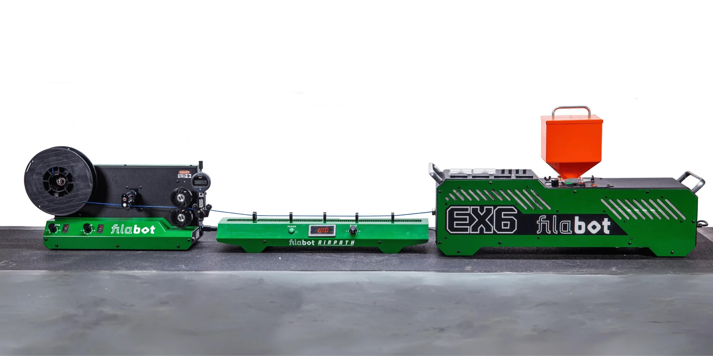 Web Filabot
Antecedentes locales¶
En Uruguay, el crecimiento en el uso y comercialización de impresoras 3D ha incrementado significativamente la generación de desechos plásticos, especialmente en comunidades de diseñadores, makers y emprendedores. No obstante, hasta la fecha no se han desarrollado sistemas de gestión locales que aprovechen estos desechos de manera totalmente sistemática.
Sin embargo, se destacan algunas iniciativas que abordan la temática desde puntos ideológicos similares:
La Fábrica Makerspace es un emprendimiento que forma parte de la comunidad global de Precious Plastics y generaron el primer taller de experimentación y reciclaje de plástico en Uruguay, se dedican a tomar materiales plásticos deshechados (principalmente ABS) y utilizarlos como materia prima para generar nuevos productos.
Kenistech es un emprendimiento que fabrica y comercializa filamento para impresion 3D reciclado hecho 100% a partir de plásticos de tablets, computadoras en desuso del Plan Ceibal, componentes plásticos de máquinas y periféricos (principalmente ABS).
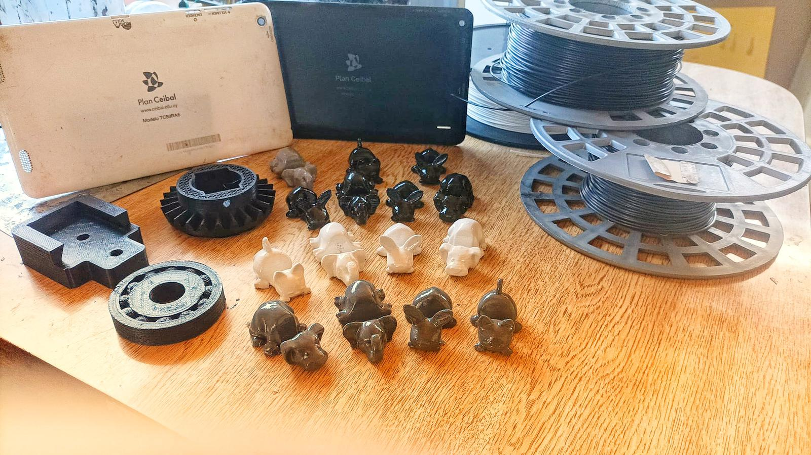 Web Kenistech
Si bien existen esfuerzos relacionados con el reciclaje de plásticos, estos no están adaptados para atender específicamente los residuos derivados de la impresión 3D. Por lo tanto, el país carece de un modelo que promueva la transformación de estos materiales en productos reutilizables, lo que presenta una oportunidad única para desarrollar soluciones innovadoras y sostenibles dentro del contexto nacional.
Descripción del proyecto¶
El proyecto “EcoPlaca 3D” tiene como objetivo transformar los desechos plásticos generados por la impresión 3D en placas recicladas totalmente funcionales, que pueden emplearse en diversos tipos de proyectos de diseño y fabricación. Estas placas se producen mediante un proceso que integra tecnologías de fabricación digital, como el corte láser, y promueve el cierre del ciclo de vida del plástico de forma eficiente, responsable y sostenible.
El modelo de reciclaje propuesto se adapta a las herramientas y necesidades del contexto local, brindando una solución innovadora y accesible a la problemática ambiental que representan los residuos plásticos derivados de la impresión 3D. Este enfoque no solo contribuye a la economía circular, sino que también fomenta la reutilización creativa de materiales, ofreciendo un recurso valioso para diseñadores, makers y emprendedores comprometidos con la sostenibilidad.
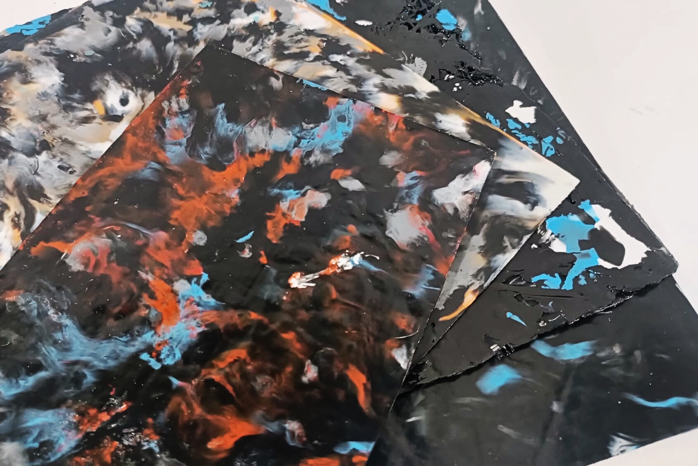
Materiales y herramientas necesarias para la fabricación de las placas¶
● Materiales: Residuos plásticos de impresión 3D (PLA y PLA + principalmente)
● Herramientas: Trituradora de plásticos, máquina de sublimación, marcos metálicos.
● Herramientas manuales: Pinza, alicate, martillo, trincheta, equipo de protección.
● Componentes Electrónicos: Sensores de temperatura y humedad, Placa Arduino UNO, y controladores electrónicos.
Modelo de funcionamiento¶
El proceso esencialmente consta de cinco pasos: selección de plásticos, triturado de plásticos, monitoreo de condiciones, fundición y moldeo, y por último, secado y desmoldeo.
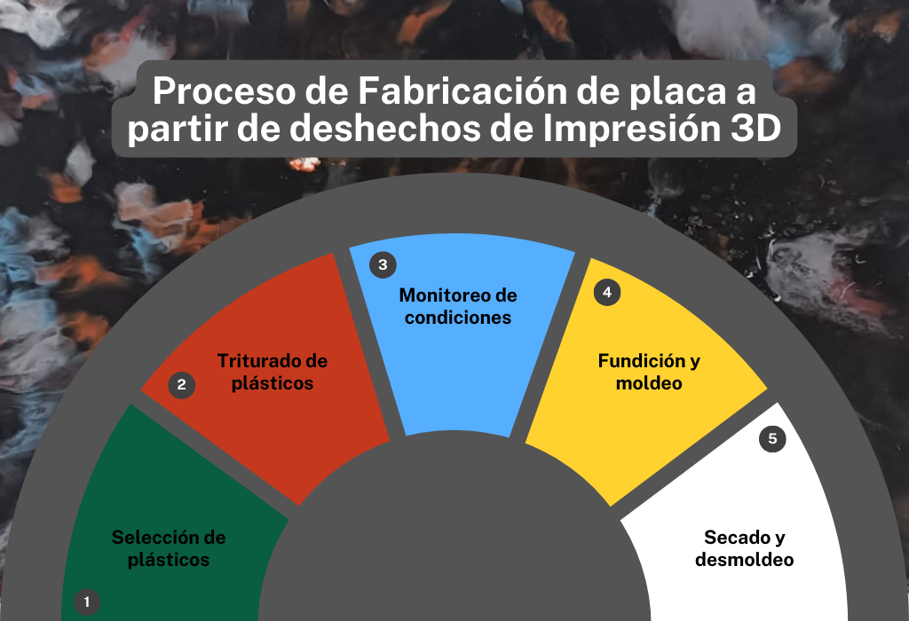
Selección de plásticos¶
El primer paso es seleccionar cuidadosamente los desechos de impresión 3D con dimensiones y densidad adecuadas para la trituradora, asegurando su óptimo funcionamiento. Los fragmentos deben medir, como máximo, 2 a 3 centímetros cúbicos, lo que permite procesarlos eficientemente sin sobrecargar la máquina. Se utilizarán principalmente desechos de PLA y PLA+, ya que este material es universalmente el más utilizado en impresión 3D.
PLA¶
El PLA (ácido poliláctico) es un termoplástico biodegradable derivado de recursos renovables, conocido por su facilidad de uso en impresión 3D y su baja temperatura de fusión, alrededor de 173°C.
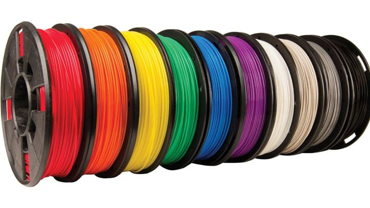
Este material es ideal para el corte láser gracias a su facilidad en el procesamiento, rápida solidificación y baja conductividad térmica, que permiten cortes precisos sin deformaciones ni residuos indeseados. Además, su origen sostenible y su compatibilidad con tecnologías de fabricación digital lo convierten en una opción versátil para proyectos que buscan integrar sostenibilidad y calidad.
En contraste, materiales como el ABS reciclado tienden a fundirse nuevamente durante el corte láser debido a sus propiedades térmicas, limitando su aplicación en este tipo de procesos.
Tipos de desechos¶
● Soportes: Estructuras auxiliares utilizadas para sostener partes de una impresión 3D durante el proceso, que luego se eliminan.
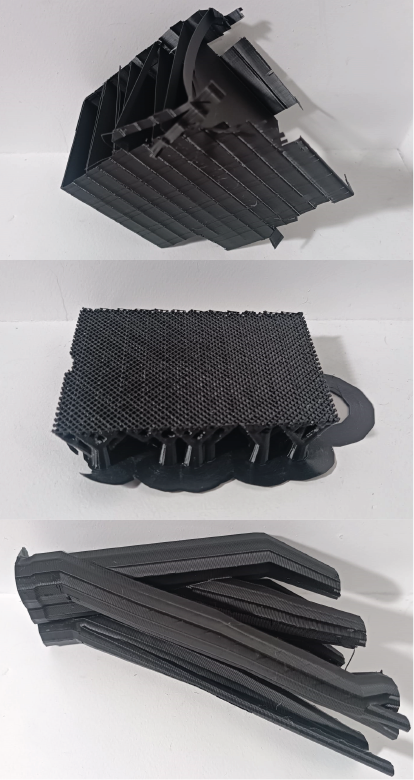
● Impresiones fallidas: Piezas incompletas o defectuosas generadas por errores en la impresión, como mala adhesión o interrupciones.
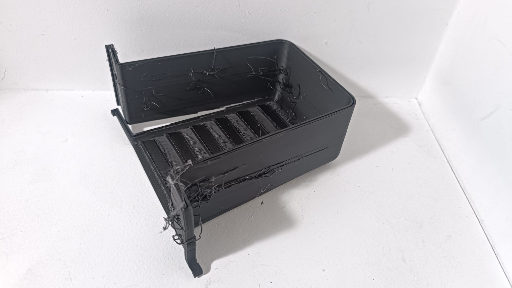
● Pruebas de impresión: Objetos fabricados para ajustar configuraciones y tolerancias o evaluar el rendimiento de la impresora.
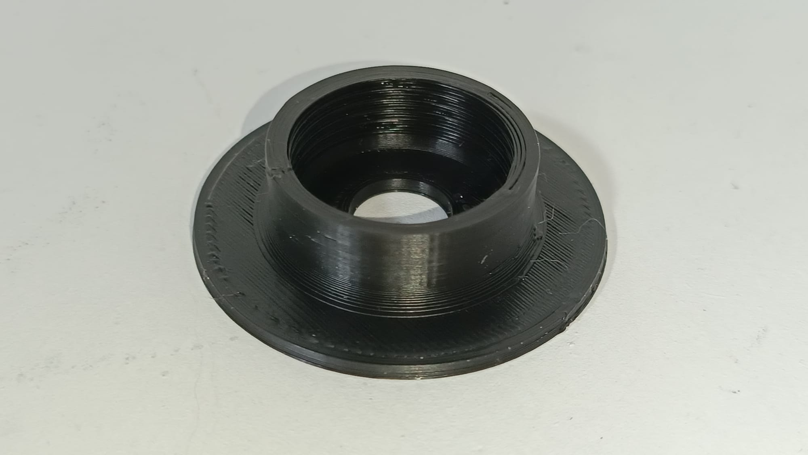
● Sobrantes de filamentos: Fragmentos o extremos de filamentos que no pueden ser utilizados en nuevas impresiones debido a su longitud limitada.
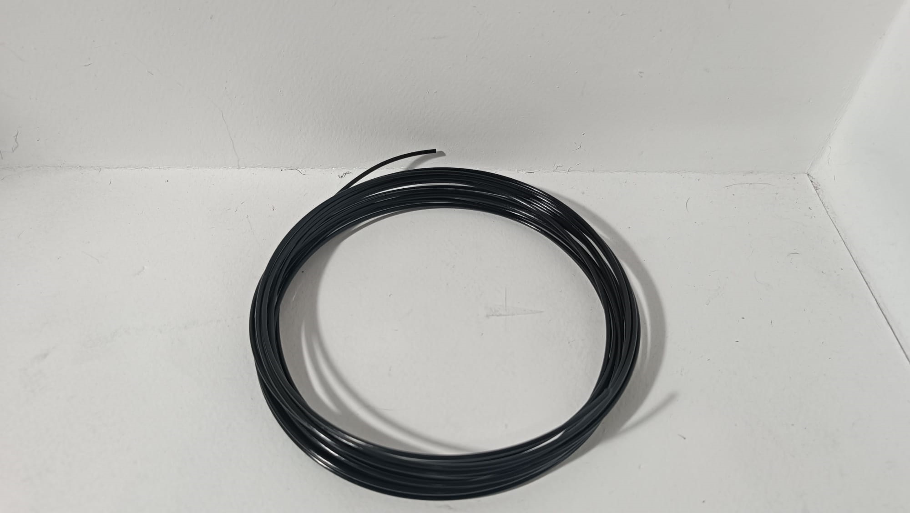
Algunos de estos desechos resultan demasiado grandes y robustos, lo que requiere romperlos manualmente antes de triturarlos. Para esta tarea se utilizan herramientas como martillos, trinchetas, alicates, pinzas para metales y otros utensilios manuales, con el fin de reducir su tamaño a uno óptimo para el proceso de trituración. Este paso es fundamental para facilitar el manejo y asegurar un reciclaje eficiente.
Sistema de Triturado¶
Los plásticos seleccionados y previamente fraccionados en tamaños más chicos, se introducen en la tolva de la máquina trituradora.
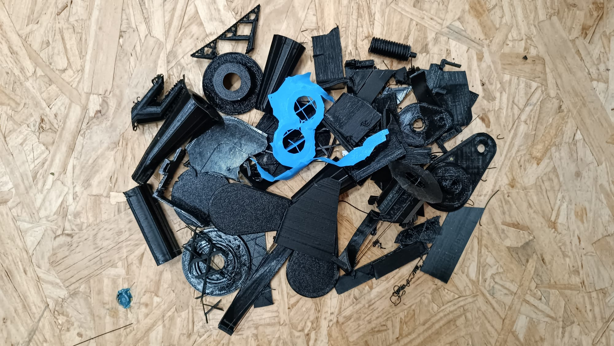
La tolva utilizada está basada en los diseños desarrollados por Precious Plastic, que proporciona planos y guías detalladas para su construcción. Esta trituradora está equipada con un motorreductor que acciona un eje con múltiples cuchillas metálicas diseñadas para triturar eficazmente los plásticos.
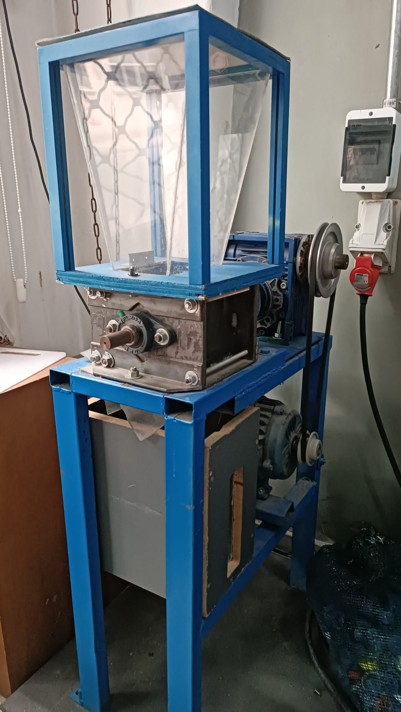
Dependiendo del tamaño y densidad de los desechos, puede ser necesario repetir el proceso de trituración para obtener un picadillo más fino y homogéneo.
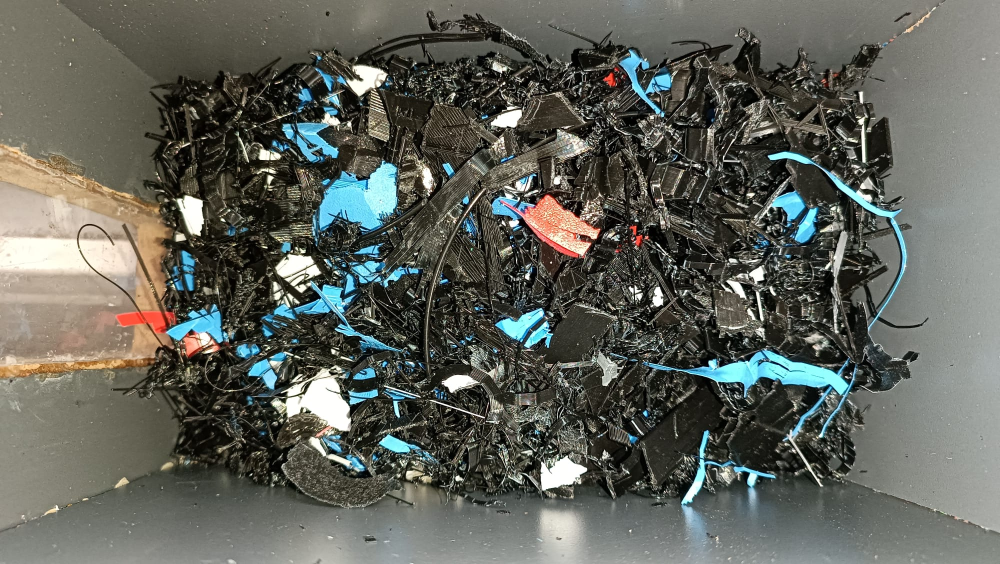
Este proceso de refinamiento es esencial para garantizar que el material esté en condiciones óptimas para las etapas posteriores de fundición y moldeado, asegurando la calidad y consistencia del producto final. El uso del diseño de Precious Plastic no solo garantiza un rendimiento comprobado, sino que también promueve la filosofía de código abierto y sostenibilidad en el reciclaje de plásticos.
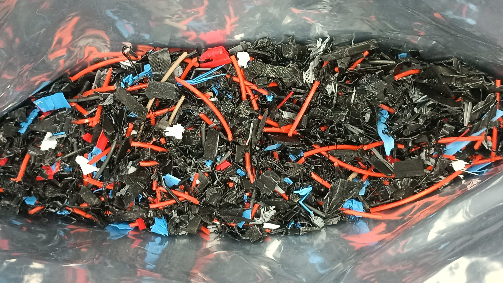
Monitoreo de condiciones¶
Se emplea un sistema basado en Arduino y sensores específicos para medir y controlar las condiciones de temperatura y humedad del material reciclado antes de su fundición. Este enfoque permite establecer parámetros precisos que garantizan la consistencia y calidad del proceso, aportando fiabilidad técnica y trazabilidad. Al monitorear estas variables en tiempo real, se asegura que la metodología de fabricación de las placas sea replicable bajo circunstancias definidas, optimizando así la uniformidad del producto final y facilitando su integración en procesos estandarizados.
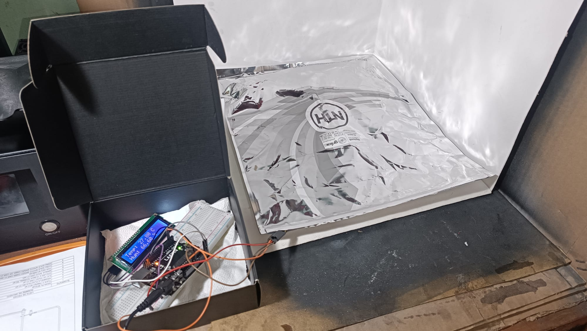
Componentes¶
● Placa electrónica Arduino UNO
● Pantalla LED 16X02 con Módulo I2C
● Sensor de Temperatura y Humedad DHT11
● Breadboard
● Cables conectores
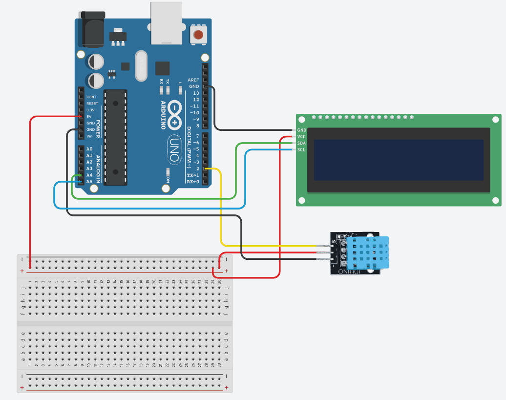
Funcionamiento¶
Este sistema monitorea en tiempo real la temperatura y la humedad dentro de una bolsa hermética que contiene el material triturado (picadillo) destinado a la fabricación de placas en la máquina de sublimación. Se compone de un sensor DHT11, un Arduino Uno y un display LCD 16x2 con interfaz I2C, integrados mediante cables extendidos para ubicar el sensor dentro de la bolsa sin comprometer el aislamiento hermético.
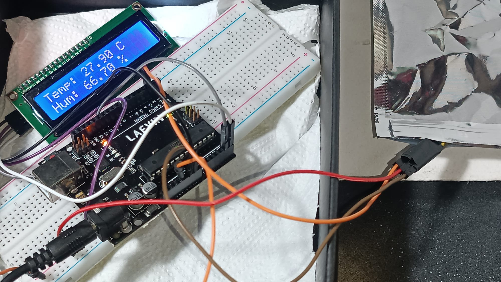
Link de descarga del archivo de código para Arduino IDE
Datos recaudados¶
Los datos recaudados a partir del monitoreo del picadillo de PLA dentro de la bolsa hermética indican un promedio de 65% de humedad relativa y una temperatura de 27 °C. Estos valores reflejan tanto las condiciones internas del material como la influencia directa del clima de Uruguay, que se caracteriza por niveles de humedad ambiental elevados.
Esta información es fundamental para evaluar la necesidad de un pretratamiento del material, ya que el PLA es un material higroscópico cuya calidad puede verse afectada negativamente por la absorción excesiva de humedad. Estos datos permiten ajustar el proceso de preparación del picadillo para garantizar su adecuado desempeño en la máquina de sublimación.
Proceso de Fundición y Moldeo¶
El proceso de fundición y moldeo utiliza un marco metálico, láminas de teflón reforzadas con fibra de vidrio y una máquina de sublimación para aplicar calor y presión de manera uniforme. Los desechos plásticos triturados se funden y compactan, así formando las placas recicladas.
Máquina de sublimación¶
Existen diversas tipologías de máquinas sublimadoras en el mercado. En nuestro caso, utilizaremos una prensa térmica de sublimación plana manual. A diferencia de la Sheet Press, diseñada y patentada por Precious Plastics, esta máquina es accesible comercialmente en el mercado local uruguayo. Su costo promedio ronda los 400 USD, dependiendo del tamaño y las funcionalidades.
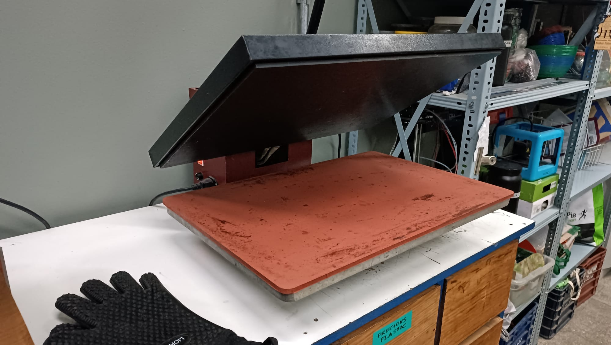
En contraparte, la Sheet Press de Precious Plastic, es una máquina diseñada para transformar residuos plásticos en láminas recicladas de 1x1 metro. Aunque los planos y guías para construirla son de acceso libre y gratuito, su construcción requiere una inversión en materiales que ronda los 2700 USD, sin incluir costos de mano de obra ni herramientas especializadas.
Por lo tanto, aunque las prensas térmicas de sublimación son accesibles en Uruguay y pueden utilizarse para ciertos procesos de transferencia térmica, la fabricación de láminas recicladas a partir de desechos plásticos triturados, como las producidas por la Sheet Press de Precious Plastic, requiere una maquinaria específica y una inversión considerablemente mayor.
Marco metálico¶
Para la generación de las placas, utilizaremos marcos metálicos con dimensiones exteriores de 400 x 300 x 1,5 mm. Estas medidas permiten crear un área interior útil de 340 x 220 mm, que servirá como espacio de trabajo para el material reciclado. Estos marcos, por ser metálicos, aseguran la contención uniforme del material durante los procesos de prensado térmico y enfriado.
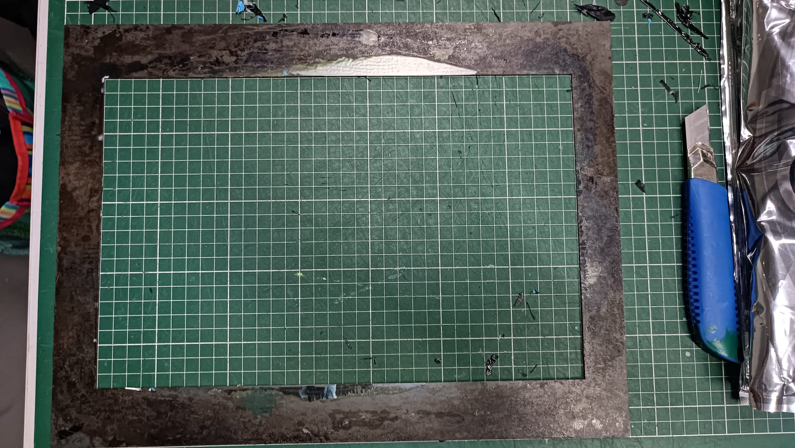
Láminas de teflón¶
La lámina de teflón reforzada con fibra de vidrio se utiliza en este proceso debido a sus propiedades antiadherentes, su resistencia a altas temperaturas y su durabilidad. Estas características evitan que el plástico fundido se adhiera a las superficies de la máquina o del marco, protegen los equipos y permiten un desmolde limpio y eficiente, asegurando así un acabado uniforme y de alta calidad en las placas recicladas.
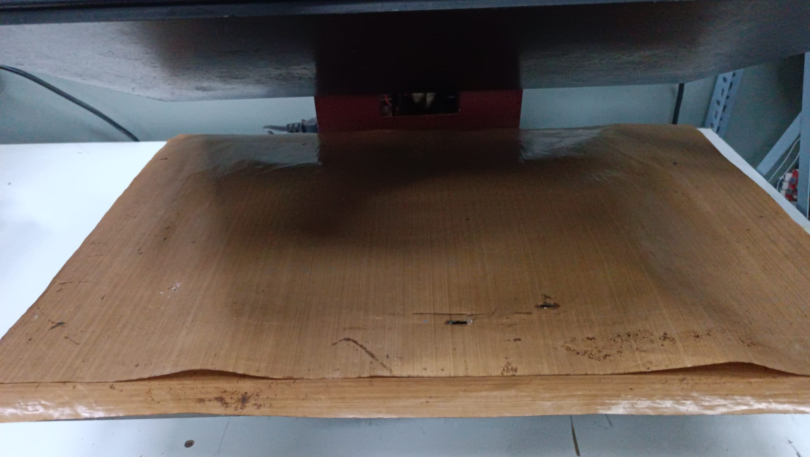
Metodología de fabricación¶
Se coloca una lámina de teflón reforzada con fibra de vidrio en la base de la máquina de sublimación, seguida de la colocación de un marco metálico centrado sobre ella. El interior del marco se rellena con el picadillo triturado previamente procesado. Luego, se coloca una segunda lámina de teflón con fibra de vidrio sobre el material, y todo el conjunto se prensa utilizando la estructura superior de la máquina. Tras el tiempo requerido para la sublimación, se abre la máquina y se voltea el marco para repetir el prensado, asegurando un acabado uniforme en ambos lados del material.
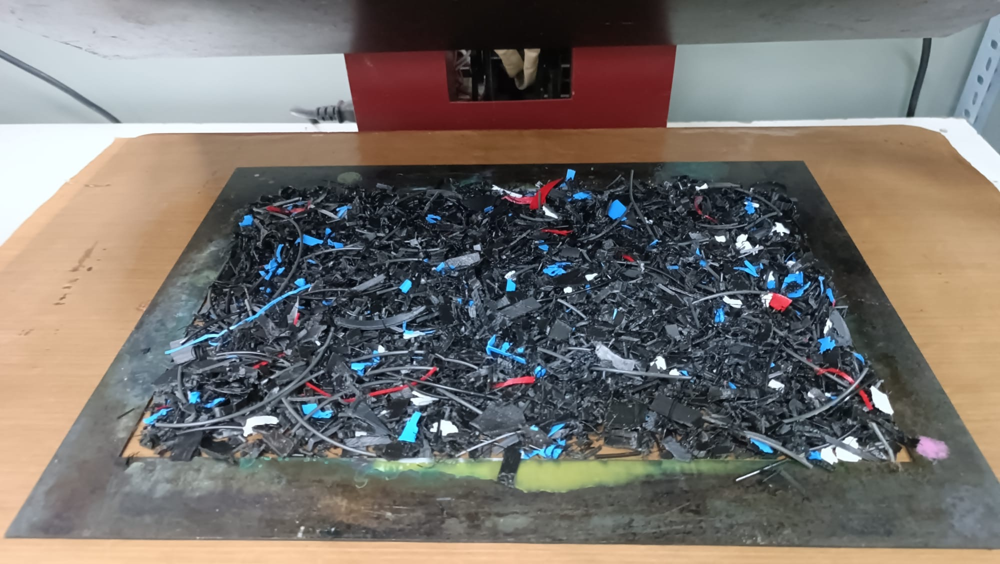
El tiempo de sublimación varía según factores como la cantidad de material, las dimensiones del marco y la temperatura empleada. En este proceso, se utiliza un marco de 400x300x1,5mm, trabajando a una temperatura de 180 °C, con un tiempo estimado de prensado de 10 minutos por cada lado. Este método asegura que el material se funda de manera uniforme, adopte la forma deseada y garantice una placa con el material plástico correctamente compactado y condensado.
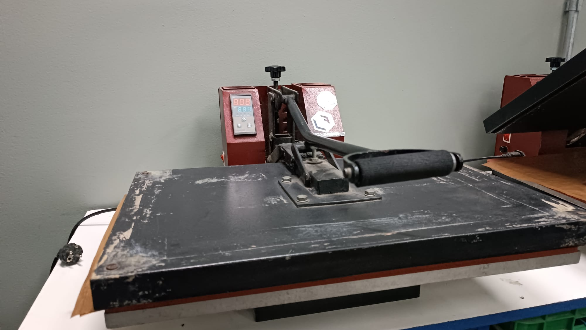
Aunque la máquina de sublimación no es una herramienta especializada para el reciclaje de plásticos, su disponibilidad, adaptabilidad y bajo costo la convierten en una opción viable para proyectos locales que buscan implementar soluciones sostenibles en el manejo de desechos plásticos de impresión 3D.
Desmoldeo y enfriado¶
Se retira el conjunto completo de la máquina de sublimación y se coloca en un lugar adecuado para que el material se enfríe a temperatura ambiente. Una vez que el plástico ha alcanzado una temperatura segura, se utiliza una trincheta para repasar cuidadosamente los bordes del marco, lo que facilita la extracción de la plancha sin comprometer su integridad. Este procedimiento es crucial para prevenir daños en el producto final y garantizar que conserve la forma y calidad deseadas, manteniendo así la uniformidad y funcionalidad de la placa reciclada.
Procesos utilizados¶
● Fabricación Aditiva (Impresión 3D): Para la creación de componentes del dispositivo, como estructuras y soportes.
● Fabricación Sustractiva (Corte Láser y CNC): Para la creación de piezas metálicas y el corte de las placas recicladas.
● Termoformado y Moldeo: Los plásticos reciclados son fundidos y moldeados en una máquina sublimadora, produciendo placas que se estabilizan por enfriamiento.
Resultados obtenidos¶
Posibles aplicaciones del material¶
Propuesta de valor¶
EcoPlaca 3D ofrece una solución innovadora y sostenible para transformar los desechos plásticos generados por la impresión 3D en placas funcionales reutilizables. Este proyecto promueve la economía circular mediante el reciclaje de plásticos, reduciendo el impacto ambiental y proporcionando un material útil para diseñadores, makers y emprendedores.
Los valores clave de la propuesta incluyen:
● Reciclaje funcional: Placas reutilizables de alta calidad a partir de desechos plásticos.
● Diseño único: Acabado “tie-dye” que resalta el reciclaje.
● Sostenibilidad: Contribución activa a la economía circular.
● Accesibilidad: Solución práctica y económica, fácil de replicar.
● Innovación responsable: Integración de tecnologías como el corte láser y termoformado.
En conjunto, EcoPlaca 3D proporciona una respuesta práctica al desperdicio plástico y abre nuevas oportunidades en el diseño y fabricación sostenible.
Resultados y discusión¶
En el transcurso del proyecto, algunas problemáticas fueron correctamente abordadas, así como otras no. Estas son algunas de ellas:
Preguntas Respondidas:¶
● ¿Es posible reciclar desechos plásticos de impresión 3D para producir materiales reutilizables de manera efectiva?
● ¿Qué condiciones deben ser monitoreadas para garantizar la calidad del material reciclado?
Lo que Funcionó:¶
● El proceso de reciclaje generó placas funcionales de alta calidad.
● El sistema de monitoreo basado en Arduino permitió optimizar las condiciones de producción.
Lo que No Funcionó:¶
● La variabilidad en la calidad de los desechos plásticos afectó la consistencia del material reciclado.
● El sistema de fundición necesitó ajustes para mejorar la uniformidad del grosor de las placas.
Conclusiones¶
El proyecto “EcoPlaca 3D” demostró que es posible reciclar desechos plásticos de impresión 3D y transformarlos en un material funcional y reutilizable. El sistema es accesible, económico y aplicable a una variedad de usuarios, desde diseñadores hasta emprendedores. Sin embargo, se identificaron áreas de mejora en el control de la calidad del material reciclado y en la optimización de los procesos de fabricación.
Glosario¶
● Economía Circular: Modelo de producción y consumo que promueve la reutilización, el reciclaje y la reducción de residuos.
● Fabricación Aditiva: Proceso de creación de objetos mediante la adición de capas sucesivas de material.
● Termoformado: Proceso de modelado de plásticos a través del calor para darles forma.
● Precious Plastics: Iniciativa global de código abierto que promueve el reciclaje de plásticos a pequeña escala.
Bibliografía¶
● Kreiger, M. (2019). Precious Plastics: Recycling Plastics with Open-Source Technology. [PDF]. Precious Plastics. Recuperado de: https://preciousplastics.com
● Bocken, N. M. P., de Pauw, I., Bakker, C., & Van der Grinten, B. (2016). Product design and business model strategies for a circular economy. Journal of Industrial Ecology, 20(3), 383–397. https://doi.org/10.1111/jiec.12259
● Moreno, M., Chiaroni, D., & del Río, P. (2016). Towards a Circular Economy: A SWOT Analysis of the Circular Economy at the Micro-Enterprise Level. Journal of Cleaner Production, 135, 983–994. https://doi.org/10.1016/j.jclepro.2016.07.033
● Tuck, C., & Hague, R. (2014). The Role of Additive Manufacturing in the Circular Economy. Additive Manufacturing & 3D Printing, 1(1), 16–23. https://doi.org/10.1080/25734988.2014.1091807
● ISO 14021:2016. Environmental labels and declarations — Self-declared environmental claims (Type II environmental labeling). International Organization for Standardization.
● Schmidt-Bleek, F. (1994). Wieviel Umwelt braucht der Mensch? MIPS – das Maß für ökologisches Wirtschaften. Birkhäuser Verlag.
● Thompson, R. C., Moore, C. J., Vom Saal, F. S., & Swan, S. H. (2009). Plastics, the environment and human health: current consensus and future trends. Philosophical Transactions of the Royal Society B: Biological Sciences, 364(1526), 2153–2166. https://doi.org/10.1098/rstb.2009.0053
● Kunz, N., & Morell, A. (2018). Recycling Plastics: Challenges and Opportunities for Sustainable Manufacturing. Journal of Cleaner Production, 172, 2446–2457. https://doi.org/10.1016/j.jclepro.2017.10.179
● Bakker, C., & Jiang, Y. (2014). Designing the Circular Economy: From Waste to Resources. Technological Innovation for Sustainability, 1(2), 111–123. https://doi.org/10.1016/j.techsoc.2014.01.002
● Meadows, D. H., Randers, J., & Meadows, D. L. (2004). Limits to Growth: The 30-Year Update. Chelsea Green Publishing.
¡Muchas gracias por su atención!